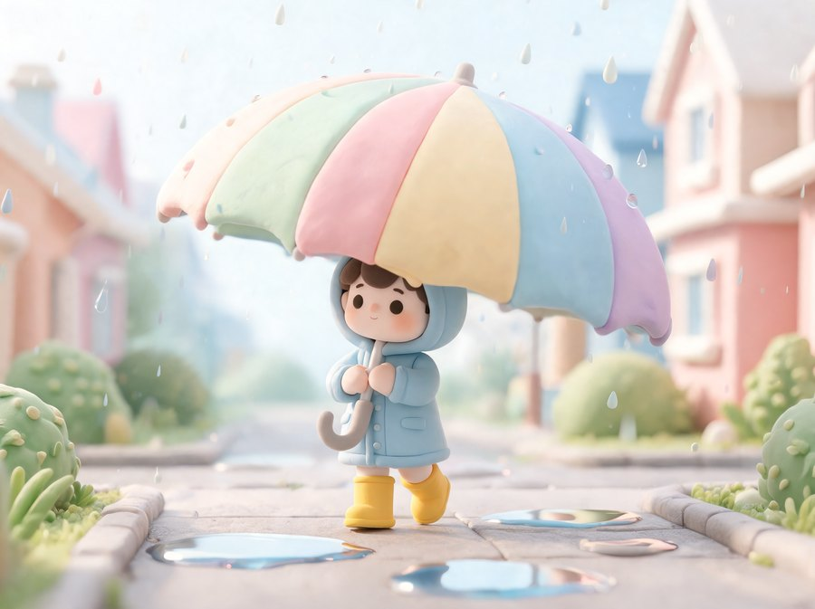
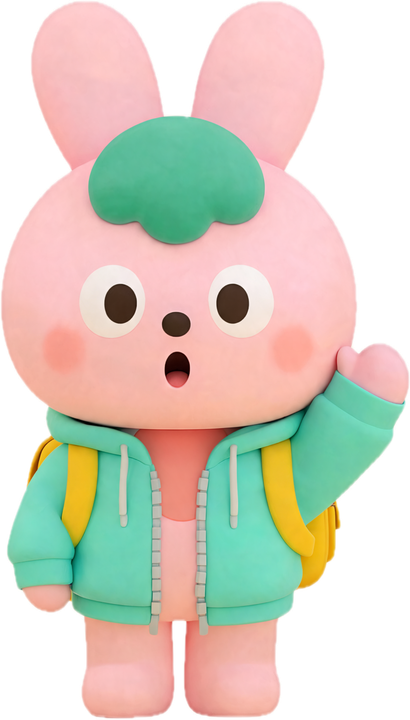
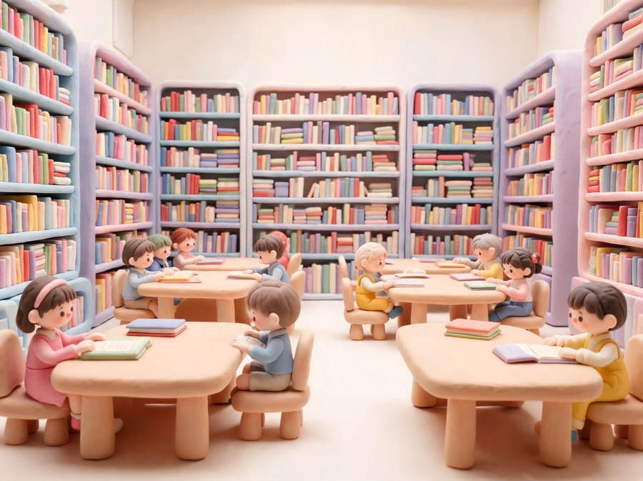
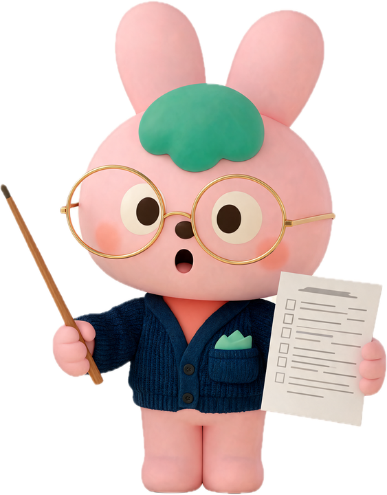
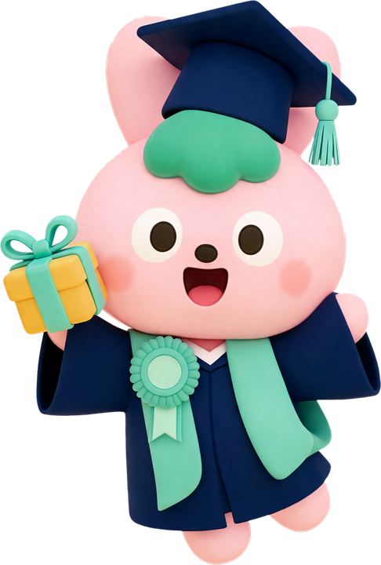
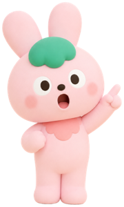
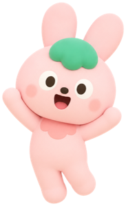

초등 1~6학년 영단어 체크
그림과 문장으로 영어 단어를 맞혀 봐요.
10단어 3분 내외 · 이어서 10단어는 문장까지
무료회원가입 없이아이와 함께 풀기

비 오는 날 아이가 들고 있는 이것, 영어로 뭐라고 할까요?


L___'s g_ t_ t__ library.
Let's go to the library.
단어 출처 교육부 2022 개정 교육과정 초등 권장 800단어 · 학년 기준 교육과정 학년군 성취기준
초등 1~6학년 레벨테스트
대치동 학원 입학 테스트처럼 어휘·문법·독해 10문제를 풀어요.
소요시간 : 10분 내외
학년마다 대치동 레벨 기준에 맞춘 10문제예요.
It was so ______ that we stayed inside all day.
She ______ to the library every Saturday.
Penguins cannot fly, but they are excellent swimmers. They use their wings like flippers…
What is the passage mainly about?

리얼 아카데미 무료체험
집에서 수강하는 대치동 영어학원. 오늘 체크한 단어부터 수업에서 말하고 써 봐요.


